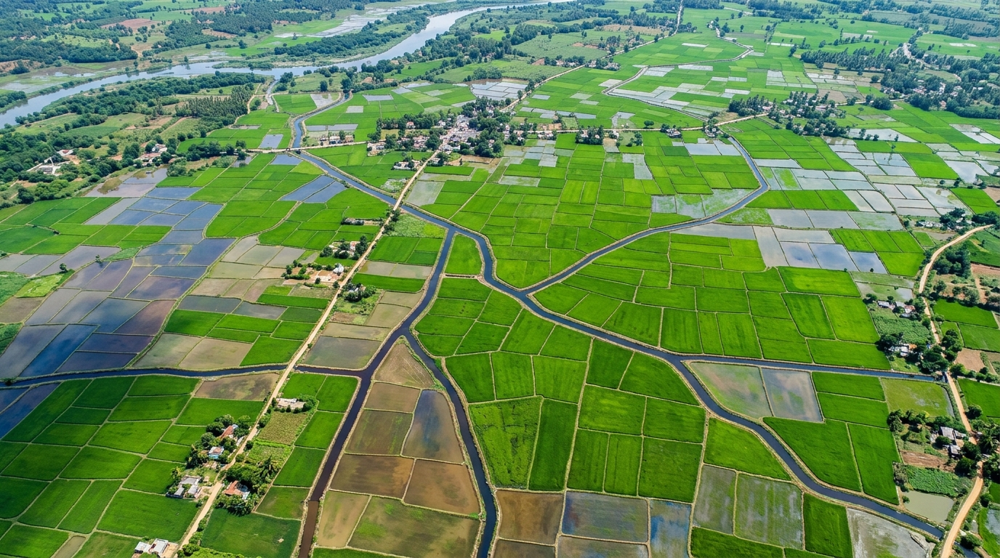

Understand Your Crops Before Problems Grow.
Free space-based vegetative index and agrometeorological insights for Indian farmers.

Field Needs Inspection: Canopy Moisture Change
Status: Possible change in vegetative reflectance detected in the North-East zone. Requires physical ground verification before scheduling irrigation or chemical treatments.
Three Practical Field Actions
Tap tile to inspectEnter your mobile number to receive instant satellite crop insights and irrigation recommendations via SMS.
Field Needs Inspection: Canopy Moisture Change
Biophysical vegetation index analysis and agrometeorological interpretation for Parcel #142/A (Mandya, Karnataka).
What Did the Satellite Detect? — Canopy Vigor Analysis
Copernicus Sentinel-2 Band 8 (NIR) & Band 4 (Red) Reflectance Diagnostics
Copernicus Sentinel-2 multispectral instrument (MSI) acquired 10-meter ground resolution surface reflectance data for your parcel. The Normalized Difference Vegetation Index (NDVI) was computed using the formula:
How this relates to your crop canopy: Healthy, turgid leaves contain spongy mesophyll cells filled with water. These cells strongly reflect 40%–50% of incoming Near-Infrared radiation (842 nm) while chlorophyll-a and chlorophyll-b pigments absorb 85%–90% of visible Red light (665 nm) for photosynthesis.
Why the index dropped in the affected zone: When root moisture declines, leaf guard cells close stomata to prevent dehydration. This triggers a drop in leaf cellular turgor pressure and causes the spongy mesophyll internal cell walls to compress. As a result, Near-Infrared reflectance drops measurable days before human eyes can detect visible leaf curling or yellowing.
Why Is This Happening? — Root-Zone & Field Cause Analysis
Agronomic Root-Zone Assessment & Practical Field Causes
Your field's Sandy Clay Loam holds moderate water capacity. Active feeding roots during this vegetative stage occupy the upper 0–15 cm zone. With dry 31°C daytime heat and gentle 12 km/h winds, surface evapotranspiration reaches 4.2 mm/day. The top 5 cm is drying out 3 times faster than deeper subsoil layers.
Agronomic Mechanism: Slight elevation gradient along the north-eastern ridge causes water runoff rather than vertical percolation, or drip lateral emitters in rows 12–18 are partially clogged with silt/carbonate deposits.
Agronomic Mechanism: Dense canopy tillering combined with high morning relative humidity (80%+) and warm 31°C afternoons can foster early sheath blight (Rhizoctonia solani) or leaf spot fungal spores on lower foliage.
Agronomic Mechanism: When root zone moisture drops below 40% Field Capacity, mass flow of dissolved nitrate (NO3-) ions to roots ceases, producing localized mild chlorosis that mimics nitrogen deficiency.
What Should You Do Next? — Step-by-Step Field Plan
Chronological Agronomic Intervention Protocol (ICAR Guidelines)
- Conduct perimeter walk specifically along the North-East ridge border.
- Perform the Hand-Feel Soil Ball Test: Dig 10 cm into root zone and squeeze a handful of soil. If it crumbles without holding shape, available moisture is below 40% Field Capacity.
- Inspect lower 10 cm of crop stems for water-soaked discolored lesions or rust pustules.
- Irrigate during late afternoon / evening: Avoid midday watering which loses 30%–35% of volume to atmospheric evaporative heat and shocks delicate root hairs.
- Apply 25–30 mm equivalent water depth (run drip system for ~2.5 hours) with priority distribution to rows along the eastern lateral line.
- Flush lateral end-caps and clean sub-main filters to clear silt clogging.
- Spray 1% Potassium Nitrate (KNO3 @ 10g/L) or 1% soluble urea in early morning to stimulate stomatal osmotic adjustment and prevent drought-induced leaf drop.
- If fungal sheath lesions exceed 5% tiller threshold, prepare recommended organic neem seed formulation (Azadirachtin 0.03% @ 5ml/L) or consult Kisan helpline.
- Copernicus Sentinel-2 pass revisit scheduled in 5 days over Mandya orbital track (Orbit R019).
- Expected vegetative recovery: Rebound from 0.58 toward ≥ 0.65 within 5–7 days following irrigation and nutrient correction.
- Earthworm will automatically process the new multispectral reflectances and notify you of the recovery status.